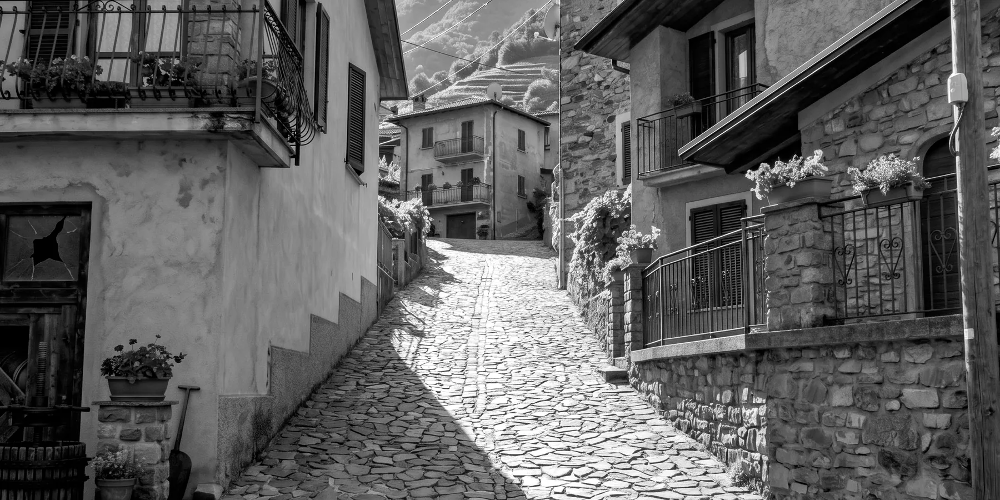
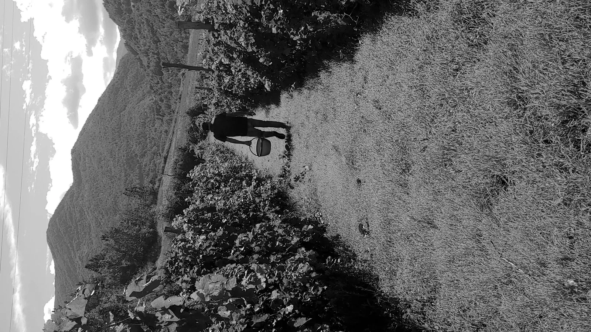
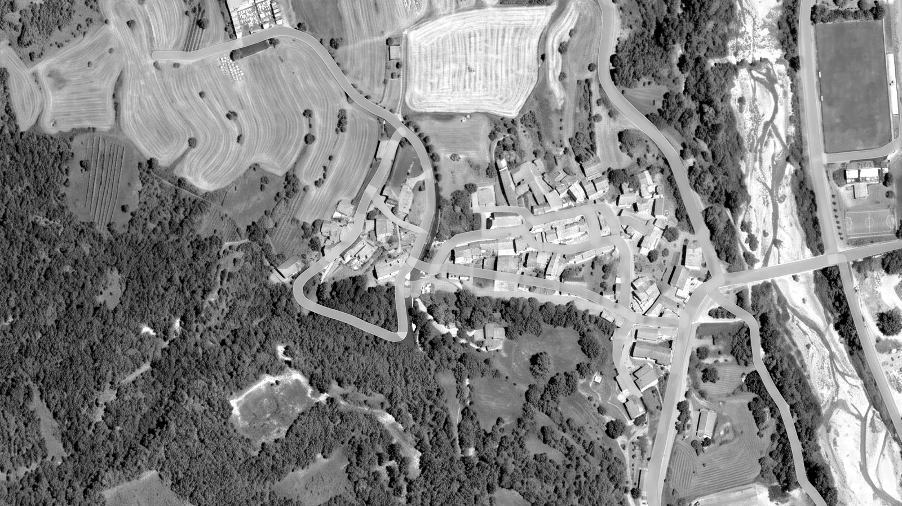

01 / Percorso
La strada
La Stra Crösa è insieme origine, orientamento e linguaggio: una linea che attraversa valle, borgo, vigna e cantina.

Strada · BorgoValle
Il paesaggio apre il racconto: non una cantina isolata, ma un luogo che prende forma attraverso il cammino.
Borgo
Casanova Staffora è il riferimento fisico e simbolico: la strada unisce il paese al lavoro quotidiano.
Vigna
Firagni e Moiasse stanno su versanti opposti della valle. Il percorso diventa anche differenza di esposizione, uva e carattere.
Cantina
Il vino arriva in cantina come conclusione di un tragitto manuale, non industriale.

Tra i filari
Territorio